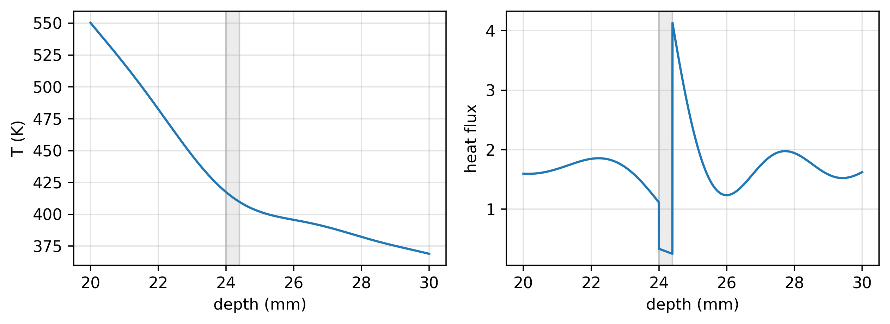
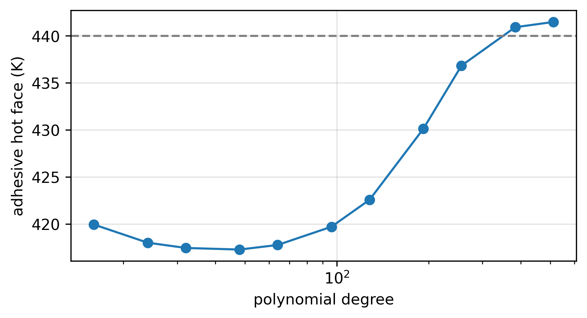
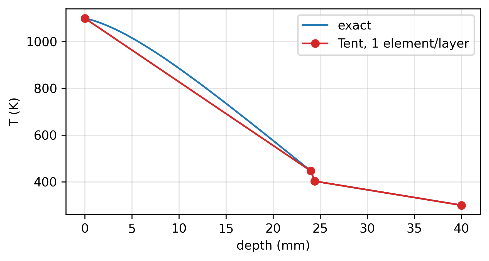

The ticket is eight days old. Add graded conductivity within a layer to the through-thickness solver. One sentence, from a manager who thinks of it as an afternoon’s work. Luis has spent several afternoons on it. Then the evenings. Well, not on the ticket itself. On something that could plausibly pass for work on the ticket, and that will give them, once it works, what the ticket should have asked for in the first place. It’s almost done. Well, almost almost. Now it is 1:40 in the morning and he has not added graded conductivity to anything.
He’s testing. That’s the defensible word for it. Before you change a code, you find out exactly what it does. He opens the reference case for the program’s new tile stack in his notebook: Kestrel, stack B. Ceramic tile on the hot side, structure on the cold side, and between them a bondline of adhesive 0.4 millimeters thick, thinner than anything the old stack designs used, because on a hypersonic airframe every gram is somebody’s argument.
from falkenrath import mara, ADHESIVE_LIMITfrom falkenrath import KESTREL_B as stackT, log = mara.certify(stack) # the certification workflowpeak = T.at(stack.adhesive_hot_face)print(stack.name, " polynomial degree:", T.degree)print(f"peak adhesive T: {peak:.1f} K",f" (limit {ADHESIVE_LIMIT:.0f} K)")
Kestrel, stack B (thin bondline) polynomial degree: 32
peak adhesive T: 417.5 K (limit 440 K)
417.5 kelvin at the glue’s hot face, 23 under the adhesive’s limit. It’s the same number Mara’s code gave when this case went through certification. Good. The code does what it did yesterday.
He plots it anyway. He always plots it. A number is a summary, and a summary is somebody else deciding what you don’t need to see.
The temperature is boring the way a temperature profile should be: hot at the surface, curving down through the tile, flattening out in the structure. The flux is not boring. Heat soaks into the tile near the surface and keeps flowing inward, so the flux should only grow with depth, a smooth ramp that levels off. Mara’s code draws the ramp, mostly. At each interface it misbehaves: it jumps, overshoots, and rings.
He knows this. Everyone who has opened Mara’s user notes knows this. Flux output near material interfaces is unreliable and should not be used. It does not affect the computed temperatures. A smooth polynomial asked to turn a sharp corner makes a mess of the corner. It’s one of the oldest artifacts there is.
His hand is already starting the next cell when he stops. The wiggles are kind of interesting. How far apart are they? And how does that spacing compare with the glue between the tile and the structure?
He zooms in on the bondline instead, and marks where the layers are.
x = np.linspace(20, 30, 3000) # zoom on the bondlinefig, (a1, a2) = plt.subplots(1, 2, figsize=(8, 3))a1.plot(x, T.temperature(x))a1.set(xlabel="depth (mm)", ylabel="T (K)")a2.plot(x, T.flux(x))a2.set(xlabel="depth (mm)", ylabel="heat flux")for a in (a1, a2): layer_lines(a, stack.interfaces, shade=stack.adhesive)plt.tight_layout()plt.show()

The grey sliver is the glue.
The adhesive is a poor conductor, worse than the tile and far worse than the structure. Whatever heat comes out of the tile has to get through that sliver, and to push the same heat through a bad conductor you need a steep temperature drop across it. There should be a cliff in the temperature curve at the sliver.
The curve doesn’t even notice the sliver. It sails across as if the glue weren’t there. And the flux inside the sliver, the heat Mara’s code says is crossing the glue, is a fraction of what goes in on one side and comes out the other. Heat doesn’t disappear inside glue.
He sits back.
Mara’s code builds its answer out of a single polynomial that spans the whole stack, smooth everywhere, and a polynomial can only bend so sharply. At polynomial degree 32, the tightest turn it can make is a couple of millimeters wide; that’s what the ringing is, the polynomial overshooting a corner it can’t make. The glue is 0.4 millimeters. So the code isn’t approximating the glue badly. It can’t put a bend that narrow anywhere, so it has no way to put one where the glue is. As far as the polynomial is concerned, there is no glue.
It can’t see the glue.
No, that can’t be right. Mara’s code has been certified on these stacks. Its temperature at the glue converges; the check says so. Luis opens a new cell and runs a sweep in polynomial degree himself.
degrees = [16, 24, 32, 48, 64, 96, 128, 192, 256, 384, 512]face = stack.adhesive_hot_facesweep = [mara.solve(stack, degree=n).at(face)for n in degrees]for n, Tn inzip(degrees, sweep):print(f"polynomial degree {n:4d}{Tn:7.1f} K")fig, ax = plt.subplots(figsize=(6, 3))ax.semilogx(degrees, sweep, "o-")ax.axhline(ADHESIVE_LIMIT, ls="--", c="gray")ax.set(xlabel="polynomial degree", ylabel="adhesive hot face (K)")plt.show()
polynomial degree 16 420.0 K
polynomial degree 24 418.0 K
polynomial degree 32 417.5 K
polynomial degree 48 417.3 K
polynomial degree 64 417.8 K
polynomial degree 96 419.7 K
polynomial degree 128 422.6 K
polynomial degree 192 430.1 K
polynomial degree 256 436.8 K
polynomial degree 384 440.9 K
polynomial degree 512 441.5 K

From polynomial degree 24 all the way to 96, the temperature at the glue barely moves: 417 to 420 kelvin. Flat, flat, flat. Then, past a hundred, it lifts off and climbs. By polynomial degree 384 it’s through the dashed line, the adhesive’s limit. By 512 it’s 24 kelvin above the certified number, and it still hasn’t stopped climbing.
The code isn’t converging toward the certified answer. Luis doesn’t notice that he’s breathing faster, or that his heart is pounding harder in his chest. What is happening?
He has to think for a second. What does the convergence check actually do? It’s the obvious one; anyone would think to use it. Start at polynomial degree 32, double it, compare the temperatures. If the two agree to within a kelvin, the answer has stopped moving, and you’re converged. If not, double again.
His hands moving faster on the keyboard, he pulls up the certification log for this case.
CERTIFICATION LOG thermal / Kestrel stack B
convergence check: double the polynomial degree until the
temperature at the adhesive hot face changes by < 1.00 K
degree 32 -> 64: 417.46 -> 417.78 K, change 0.32 K: PASS
accepted polynomial degree 32
Polynomial degree 32 to 64: a third of a kelvin. Passed on the first step. And the sweep shows why. Mara’s code thinks it’s converged at polynomial degree 32, because doubling to 64 barely changes the temperature. But the two runs only agree because both are blind to the glue. Raise the polynomial degree until the glue comes into view, and the temperature lifts off and climbs toward something higher, over the adhesive’s limit.
He reads the log twice. Two runs, a factor of two apart in polynomial degree, agreeing to a third of a kelvin, and both of them at least twenty kelvin low; the sweep hasn’t finished telling him how much more.
He’s on his feet before he decides to stand. He catches himself pacing, and notices for the first time that his fingers are tingling. Mara’s code is certifying the new thin stacks, and it’s wrong.
He sits back down faster than he means to and opens the other window on his monitor, where the eight days have actually gone. He calls it Tent, after the shape of the functions it’s built from. Nobody else calls it anything; nobody else knows it exists. He built it because it’s the obvious way to handle the thin stacks. No reason to add a feature to a code that needs replacing. Build Tent first, then add graded conductivity to that.
But he hadn’t known that Mara’s code was flat-out wrong on the thin stacks. The whole time he’s been building Tent, he’s been able to hear the thermal analysts already: a grumpy, narrow-minded this isn’t the graded conductivity we asked for. He’s been gearing up for the battle he’d have to win before they’d let him help them.
He learned from the mesh-generator debacle that improvements come with battles. The old one fell apart at corners. Wherever a tile’s edge met the gap filler and the bondline, it threw out slivers, elements so thin and skewed that the solver either choked on them or quietly returned garbage, and the analysts spent days hand-fixing the corners on every new tile layout. It also took forty minutes to mesh a single panel. Luis rewrote the corner handling over a weekend: elements graded smoothly into every corner, and every element’s shape checked before it went out the door. No more slivers, no more hand-fixing, and a panel meshed in under two minutes.
He had walked in that Monday bright-eyed, so excited. He was sure they’d stop whispering, just loud enough for him to hear, about him fixing things that weren’t broken. He’d be part of the team, like everyone else. A part of the team they needed. Maybe even liked. Or if they didn’t like him, they’d at least start liking his code.
Instead he got a whiny rebellion. Little babies who couldn’t appreciate a better interface to go with the better algorithm. Instead of a thank-you, he spent hours of his workdays writing reports: every way the old mesher failed, every way the new one didn’t, and how much faster it was. And because he was right, and because it made their work better, and because Brandon made them, the analysts adopted the mesher. But the cost of helping them was clear too. The whispered complaints were now said out loud. Confident statements about his attitude, his inability to respect the team, passed around the office as if they were facts as hard as the better code he’d given them. He still doesn’t understand why he has to fight for every improvement.
Now, with Mara’s code doing what it does on these new stacks, he won’t need the battle. He won’t need to upset everyone to give them better code. They’ll finally just see it, say thank you, and ask for help getting onto Tent. Honestly, he doesn’t even need the thank-you. Just the basic respect that lets him contribute when he finds something he can improve.
He’s not naive, of course. He has to be careful. He remembers what Brandon told him after the mesher: the trouble with getting buy-in was that they didn’t understand why the old one was broken, or why his was better. Help them see it, and they’ll come around. So he’ll do it carefully, clearly. He’ll show them how Mara’s code breaks, and how Tent doesn’t.
Instead of one smooth polynomial across the whole stack, Tent cuts the stack into pieces, elements, with a node at every place the material changes, and builds the answer out of straight lines that each live on only one or two pieces. If the glue is 0.4 millimeters thick, it gets an element 0.4 millimeters wide. There is nothing for it not to see.
He runs Tent on stack B, the thin one, with the coarsest mesh that makes any sense: one element per layer. Three elements, four nodes. He derived the exact solution for this stack last week (a layered slab with exponential heating integrates cleanly, if tediously), and he checks Tent against it.
node 0.0 mm Tent 1100.000 K error 0.0e+00 K
node 24.0 mm Tent 446.472 K error 0.0e+00 K
node 24.4 mm Tent 402.879 K error 0.0e+00 K
node 40.0 mm Tent 300.000 K error 0.0e+00 K

Zero error at the glue’s hot face. At every face. Not small: zero, to the last digit double precision can hold. Three straight segments laid across a curve that is plainly not straight, and every node sitting dead on it. At the glue’s hot face, Tent says what Mara’s code, in the polynomial-degree sweep, was so incompetently crawling toward: 446 kelvin.
The number Mara’s code certified for this case is 29 kelvin low. The real temperature, which Tent gets exactly even at this comically coarse resolution, is over the limit. Four nodes got it right.
He’d seen the exactness before, on the thick legacy stacks and the textbook test cases he’d used to build Tent in the first place. Every node, dead on, every time. He’d expected the thin stack to be the hard test, the one that finally broke it. It didn’t break. Luis grins wide.
Luis opens his work email and starts a new message to the team. As he writes, his breathing slows, and for the first time tonight his heart stops pounding. There’s no arguing with this. It’s the fix the analysts needed and didn’t even know they needed. He knows it won’t happen overnight. But this is the first step toward his new era at Falkenrath-Voss.
To: thermal-numerics@falkenrath-voss.com
Subject: Mara’s code can’t see the glue
At the certified polynomial degree (32), the Kestrel B bondline is thinner than anything the polynomial can resolve. The certified hot-face temperature is about 29 K low, which puts the real value over the 440 K limit, and the convergence check can’t catch it, because both of its runs are equally blind. Sweep attached.
I know this code has a long track record, and I’m not saying anyone missed something obvious. The flux note in the user guide was right for the stacks it was written for. Before anything changes, I’d like to walk through the sweep with whoever owns certification for Kestrel.
I’ve written a solver that doesn’t have this problem: Tent, a finite element code with a node at every material interface (branch luis/tent in thermal-tools). Tent is exact at every interface.
He reads it back. The middle paragraph reads like an apology for being right. He selects it and deletes it. Softening it will only make it sound like he isn’t sure, and he is. They need to know; they need to understand. And if they can’t see it from the plot, a paragraph won’t help them.
To: thermal-numerics@falkenrath-voss.com
Subject: Mara’s code can’t see the glue
Sent: 2:14 AM
At the certified polynomial degree (32), the Kestrel B bondline is thinner than anything the polynomial can resolve. The certified hot-face temperature is about 29 K low, which puts the real value over the 440 K limit, and the convergence check can’t catch it, because both of its runs are equally blind. Sweep attached.
I’ve written a solver that doesn’t have this problem: Tent, a finite element code with a node at every material interface (branch luis/tent in thermal-tools). Tent is exact at every interface.